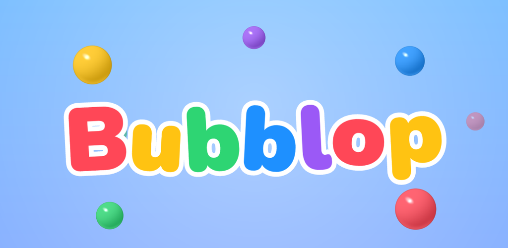

Bubblop support
Bubblop is a one-thumb puzzle game: drop balls, match 4 of a colour to pop them, and set off chain reactions.
Contact
Found a bug or have a question? Write to us and we'll reply as soon as we can.
elishakov.studio@gmail.comHow to play
- Tap a column, or drag to aim and release, to drop the ball.
- Connect 4 or more balls of the same colour, touching side by side (not diagonally), to pop them.
- Balls above fall down. If that makes another match, it pops too: a chain reaction.
- A new row of bubbles rises from below every few drops (watch the bar under the board). Pop balls next to a bubble to free the ball inside.
- The round ends when a rising row would push balls past the top, or the board is full.
Settings
Tap the pause button during a round to turn sound, vibration and ball shapes (a symbol on each colour, helpful for colour-blind players) on or off, or to replay the tutorial with How to play.
Your data
Bubblop collects no personal data, has no ads and works offline. Read the privacy policy.